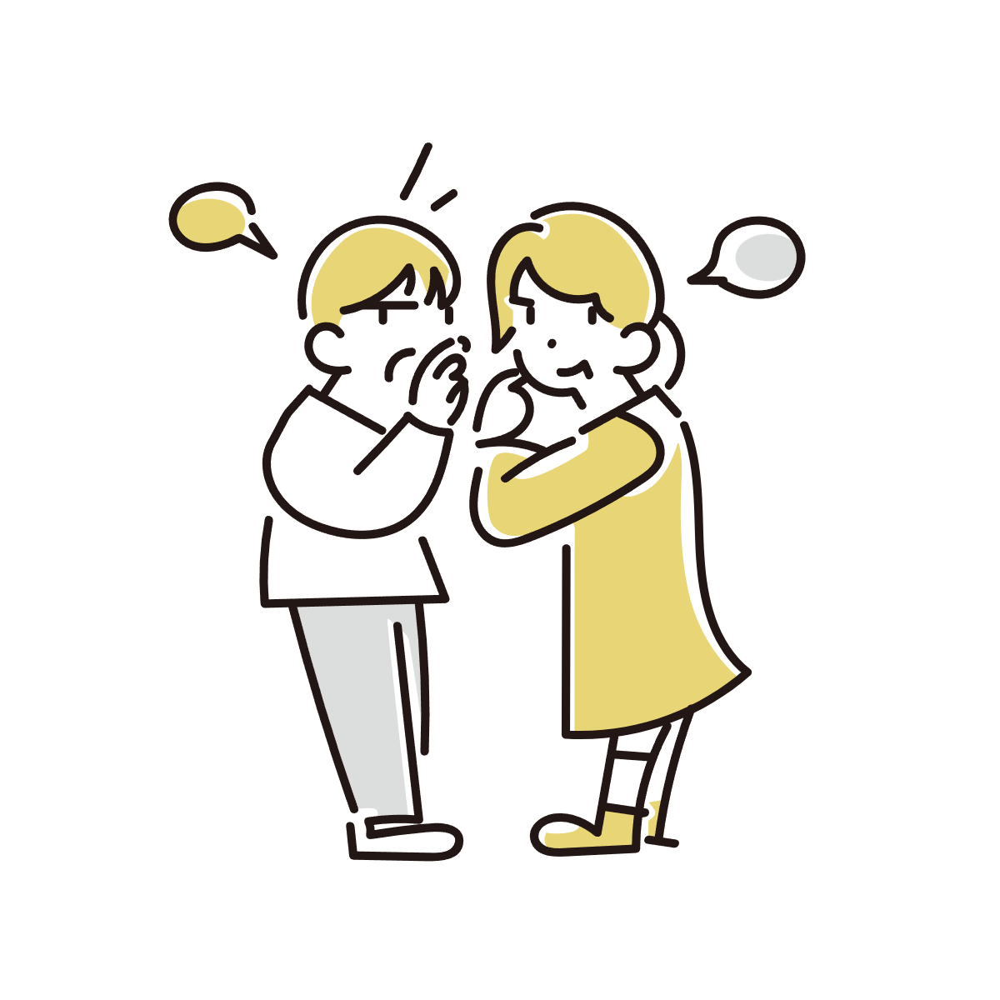

なぜ人ごみでも自分を見ている人は目につきやすいのか？
人が多い場所にいると、不思議と「こちらを見ている人」だけが目に入ることがあります。
周囲には大量の人がいるのに、なぜか視線だけは拾えてしまう。逆に、自分が誰かを見ているときに目が合い、「気づかれた」と感じることもあります。
では、なぜ人ごみの中でも「自分を見ている人」だけが浮き上がるように感じられるのでしょうか。

人間の脳は顔を優先して見つけている
まず前提として、人間の脳は顔に強く反応します。
街中や写真の中でも、私たちはかなり短時間で人の顔を見つけられます。
これは単に「顔を探そう」と意識しているからではありません。
人間の脳には、顔らしい形を優先して処理する仕組みがあります。
そのため、人ごみのように情報量が多い場所でも、顔だけは比較的すばやく拾い出せます。
実際、顔は人間にとって非常に重要な情報です。
相手が誰か、どんな感情か、どこを見ているかなど、多くの情報が顔から読み取れるためです。
ただ、ここで重要なのは、「顔を見つけること」と「こちらを見ている人が気になること」は、少し違うという点です。
単に顔を認識しているだけなら、人ごみの全員が同じように目立つはずです。
しかし実際には、私たちは「こちらを見ている顔」に強く反応しています。
人間は視線の向きを非常に気にしている
人間にとって、視線は特別な意味を持っています。
誰かがこちらを見ているということは、「自分に注意が向けられている」ことを意味するからです。
例えば、こちらを見る視線には、話しかけようとしている、こちらを警戒している、興味を持っているといった意味が含まれている場合があります。
場合によっては、敵意や好意のような感情につながることもあります。
つまり視線は、「自分に関係する何かが起きるかもしれない」という信号になります。
そのため脳は、顔そのものだけでなく、「目がどこを向いているか」をかなり優先して処理しています。
しかもこの処理は、じっくり考えて行われるというより、自動的に起きています。
だから人ごみでも、「こちらを見ている人」だけが妙に浮き上がって感じられることがあります。
「見られている気がする」は完全な錯覚ではない
よく、「視線を感じるのは気のせい」と言われることがあります。
確かに、人間は実際以上に「見られている」と感じることがあります。
特に不安が強いときは、周囲の視線を過剰に意識しやすくなります。
ただ一方で、私たちは本当に視線を検出している場面も少なくありません。
なぜなら脳は、周囲の情報を平等に処理しているわけではないからです。
大量の情報の中から、「自分に関係がありそうなもの」を優先して前面に押し出しています。
そして、その判断材料として非常に強いのが「視線」です。
つまり私たちは、人ごみ全体を均等に見ているわけではありません。
その中から、「こちらに注意を向けているかもしれない人」を優先して拾っています。

実際には「顔」より「注意」を検出している
ここまで見ると、この現象の中心は単なる顔認識ではないことがわかります。
脳が本当に優先しているのは、「自分に向けられた注意」です。
視線は、その注意を示すもっともわかりやすい手がかりのひとつです。
そのため私たちは、目が合った瞬間や、一瞬だけこちらを見られた場面、顔の向きがこちらへ変わったような変化に強く反応します。
逆に、人ごみに大量の人がいても、自分と無関係そうな人はほとんど意識に残りません。
これは脳の処理能力とも関係しています。
周囲の全員を同じ精度で観察していたら、情報量が多すぎます。
そのため脳は、「自分に関係がありそうな情報」を優先して選び出しています。
そして視線は、その優先順位を決める非常に重要な材料になっています。
なぜ脳は「自分への注意」を優先するのか
では、なぜ人間の脳はそこまで「自分への注意」に敏感なのでしょうか。
それは、人間にとって「誰が自分を見ているか」が非常に重要だったからです。
他人が自分に関心を向けているということは、会話や協力につながる場合もあれば、警戒や攻撃、集団内での評価に関係する場合もあります。
つまり、「誰が自分を見ているか」を早く察知できることは、人間関係や安全に直結していました。
そのため脳は、周囲の情報をただ均等に見るのではなく、「自分に関係しそうな注意」を優先して検出するようになっています。
人ごみでも視線だけが妙に浮き上がって感じられるのは、その働きの結果です。
私たちは周囲の世界を、完全に客観的に見ているわけではありません。
脳は常に、「自分に関係あるもの」を探しながら世界を整理しています。
そして視線は、その中でも特に優先度の高い情報なのです。
参考情報と注意点
視線への敏感さには個人差があります。不安や緊張が強い状態では、実際以上に「見られている」と感じやすくなることもあります。
関連アイテム